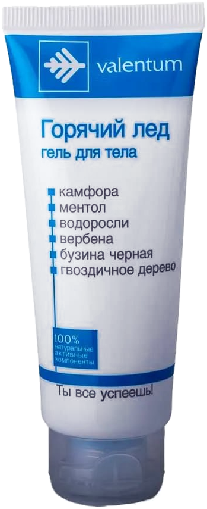

Ментол
Указан в составе формулы с охлаждающим эффектом.
«Горячий лёд» — гель для ухода за телом после активного дня. Подходит для массажа коленей, спины, плеч, рук и ног. Туба 50 мл.
Наружное применение · Туба 50 мл

Прохлада и комфорт в привычном ритме — после тренировки, длительной ходьбы или рабочего дня на ногах.
Средство предназначено для наружного применения. По информации из описания, крем легко распределяется по коже, быстро впитывается и не оставляет ощущения липкости.
Узнать о компонентах ↗Локальный уход и мягкий массаж после физической активности.
Для ухода за ногами после продолжительных прогулок.
После нагрузки на мышцы и работы на ногах.
Наружный уход и массаж после активного дня — без лишних обещаний.
Как применять ↗Основные ингредиенты формулы.
Указан в составе формулы с охлаждающим эффектом.
Ромашка, гвоздика, вербена, бузина, подорожник и тысячелистник.
Масла эвкалипта и гвоздики, Д-пантенол, камфора и аллантоин.
вода очищенная; растительные экстракты: ромашки, гвоздики, вербены, бузины, подорожника, тысячелистника; ментол, эфирное масло эвкалипта, эфирное масло гвоздики, д-пантенол, масло вазелиновое, цетеариловый спирт, воск эмульсионный, камфора, аллантоин, моностеарат глицерина, цетеарет 20, глицерин, изопропилпальмитат, пэг-40 масло касторовое гидрогенизированное, полисорбат 20, триэтаноламин, феноксиэтанол, этилгексилглицерин.
Перед применением проверьте состав на упаковке.
Способ применения приведён по описанию товара. Используйте только наружно.
Нанесите крем на нужный участок кожи.
Мягкими движениями распределите до полного впитывания.
По описанию: курс — 30 дней. При необходимости повторите через 1 месяц.
По описанию товара, средство используют для массажа локальных зон: коленей, спины, плеч, рук и ног.
Индивидуальная непереносимость отдельных компонентов. Не используйте средство при известной чувствительности к составу.
В недоступном для детей месте при температуре не выше 25 °C, вдали от прямых солнечных лучей и отопительных приборов.
Нет. Согласно предоставленному описанию, средство не является лекарственным препаратом и предназначено для наружного применения.
На Ozon или Wildberries по кнопкам на этой странице. Цена, наличие и доставка отображаются на площадке.
Покупка и оплата происходят на маркетплейсе. Точная стоимость, наличие и условия доставки показаны в карточке товара.